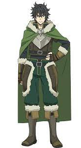
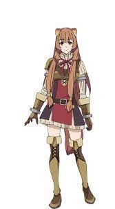
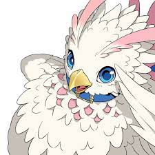
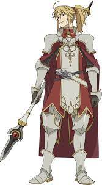
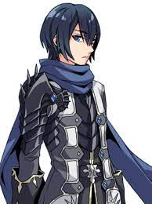
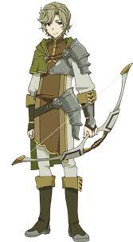

Este artigo é sobre o anime "Nome do Anime".
Um adolescente do mundo real é transportado para um mundo de fantasia medieval ao estilo RPG. O protagonista Naofumi Iwatani se descobre ser um dos “Quatro Guerreiros Cardinais Lendários”, cada qual trazido com uma arma especial: Lança, Arco e Flecha, Espada, e Escudo.
| Imagem | Nome | Descrição |
|---|---|---|
|  | Naofumi Iwatani | O protagonista da história, invocado para um mundo paralelo como o Herói do Escudo. |
|  | Raphtalia | Uma demihumana Tanuki que se torna a principal aliada de Naofumi e uma guerreira poderosa. |
|  | Filo | Uma Filolial que se transforma em uma menina fofa e poderosa, sendo uma fiel companheira de Naofumi. |
|  | Motoyasu Kitamura | Um dos Quatro Heróis Cardinal, conhecido como Herói da Lança. |
|  | Ren Amaki | Um dos Quatro Heróis Cardinal, conhecido como Herói da Espada. |
|  | Itsuki Kawasumi | Um dos Quatro Heróis Cardinal, conhecido como Herói do Arco. |
O anime foi produzido pelo estúdio japonês Kinema Citrus, conhecido por seu trabalho em várias outras séries populares.
O anime "Tate no Yuusha no Nariagari" recebeu excelentes avaliações de críticos. Eles elogiaram a história envolvente e a profundidade dos personagens, destacando a evolução do protagonista ao longo da trama.
O anime foi reconhecido pela sua qualidade e recebeu o prestigioso Prêmio de Melhor Anime de Fantasia em um evento de premiação de animes.
"Tate no Yuusha no Nariagari" conquistou uma legião de fãs e se tornou altamente popular na comunidade de anime. A trama cativante e os personagens carismáticos contribuíram para a construção de uma grande base de fãs, gerando adaptações em diversos formatos e produtos relacionados.